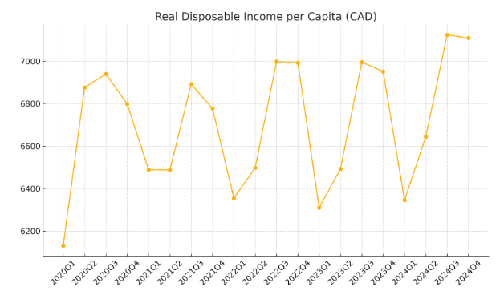
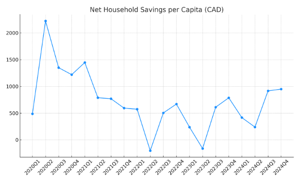

Dissertation
Overview
Shocks and Buffers: Evaluating the Bank of Canada’s COVID-19 Monetary Policy on Household Inflation, Liquidity, and Real Disposable Income
Ekamvir Randhawa, Global Business Thesis, Dublin City University, 2025
Abstract
This dissertation investigates how the Bank of Canada’s rapid shift from near-zero rates and quantitative easing to an aggressive tightening cycle between 2020 Q1 and 2024 Q4 affected Canadian households. By combining surprise-shock regressions, event-study techniques, and a G7 benchmarking exercise, it traces policy impacts on headline inflation, real disposable income, savings buffers, credit growth, and mortgage arrears.
Key Findings:
- Liquidity as the primary transmission channel: A 100 bp rate hike reduces the household saving rate by ~5 basis points and immediately contracts new consumer credit by 40 percent, while real income remains unchanged on impact.
- Defensive repayment behavior: Contrary to expectations, mortgage arrears decline during tightening, reflecting strategic pre-payment decisions reinforced by Canada’s stress-test regime.
- Modest inflationary effects of QE: Each CAD 10 billion bond-buying injection raises inflation by ~0.02 pp but does not boost real income.
- International context: Canada’s real-income losses lie between those of the UK/US and France—evidence that targeted fiscal rebates and energy-price caps can cushion households more effectively.
Research Questions
- Post-pandemic pricing pressures: Do Canadians still face elevated inflation after the BoC’s historic policy pivot?
- Re-anchoring inflation: Did rate hikes and balance-sheet adjustments successfully return inflation to target?
- Restoration of spending power: Has stabilization of prices translated into a recovery of real disposable income?
Methodology
- Data: Quarterly series (2020 Q1–2024 Q4) on CPI, real/nominal disposable income, savings rates, credit growth, and mortgage arrears.
- Identification of shocks:
- Rate Shock: overnight policy-rate changes
- QE Shock: quarter-on-quarter shifts in BoC bond holdings
- Rate Shock: overnight policy-rate changes
- Empirical blocks:
- Surprise-shock OLS regressions with Newey–West errors to estimate immediate elasticities.
- Event-study framework to chart dynamics of savings, credit, and arrears around “high-shock” quarters.
- G7 benchmarking of real disposable income and inflation against the US, UK, Germany, and France.
- Robustness checks, including alternative trend specifications and placebo windows.
- Surprise-shock OLS regressions with Newey–West errors to estimate immediate elasticities.
Key Findings
- Savings depletion is the first casualty of tightening: households draw down buffers rather than cut income or default.
- Mortgage arrears fall during tightening—evidence of proactive debt management, not distress.
- Non-mortgage credit contracts sharply in shock quarters but rebounds swiftly, implying temporary lender caution.
- QE’s role is primarily to sustain price levels, with negligible real-income or borrowing stimuli once GDP trends are controlled.
Visualizations
 
Significance & Implications
- Policy coordination: Align tightening with measured fiscal rebates to preserve household liquidity without compromising inflation goals.
- Regulatory oversight: Monitor mortgage buffers and stress-test impacts as fixed-rate terms expire.
- QE exit strategy: A gradual, data-driven unwind mitigates market disruption while guarding against renewed inflation.
- Structural reforms: Address supply-side bottlenecks (e.g., housing, logistics) to complement monetary tools.
Reflection
This thesis project across my final year was a project that allowed me to delve in my interest in Macroeconomics and expand on my studies in a self guided way while still remaining in the Data Analytics specialism at DCU, this helped me alot as this was alot of data analysis, hence my skills and knowledge from the data analytics specialsm had aided me alot from breaking down data to creating visualizations. It is a project that has allowed me to expand my knowledge about Canadian Banking and economics and find answers to questions that have roamed my mind since the pandemic. Finally, it was a great experience to experience alot of what higher education is founded upon; Research! It has given me further perspective overall of what it is that professors and much instituitions around that world partake in and expend many resources to do so, which has given me a greater appreciation for instituitions and those that are the heart of them all as they are the ones pushing the boundaries of the world and answering the big questions with integrity and precision.